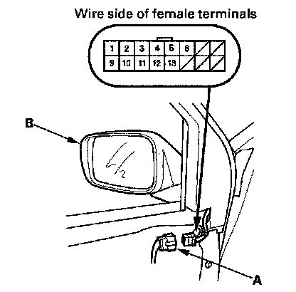
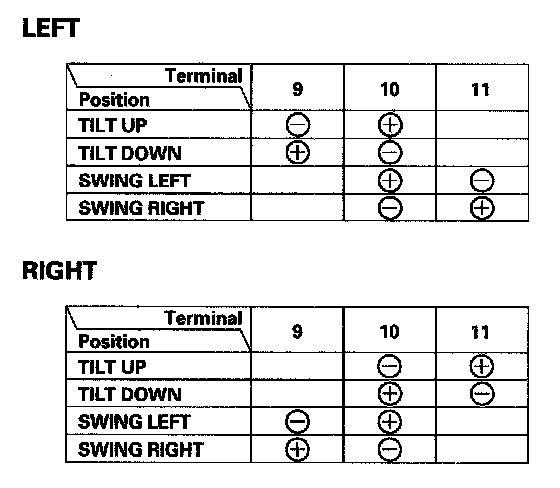

Power Mirror Actuator Test
Power Mirror Actuator TestNOTE: The power mirror actuator can be tested by using the HDS and following these steps:
- Select BODY ELECTRICAL from the SYSTEM SELECT menu.
- Select FUNCTION TEST, and then the appropriate power mirror function test.
1. Remove the door panel.

2. Disconnect the 16P connector (A) from the power mirror actuator (B).

3. Check actuator operation by connecting power and ground according to the table.
4. If the mirror fails to work properly, replace the mirror actuator.
Defogger Test
5. Measure the resistance between the No. 1 and No. 2 terminals of the 16P connector. There should be about 8 ohms or less. If there is no continuity, check for an open circuit.